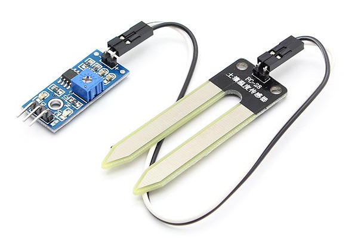
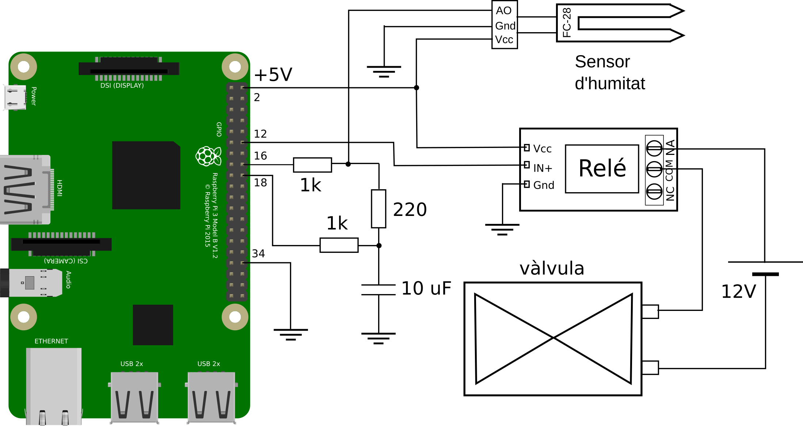

Sistema automatic de reg amb Raspberry Pi
En aquest projecte dissenyarem un sistema de reg automàtic per a un hort o un parc. El sistema s’ha d’activar només quan les plantes necessiten aigua. En el nostre projecte utilitzarem una placa Raspberry Pi per a activar una vàlvula que roman tancada fins que la placa decideix obrir-la per regar les plantes, la Raspberry Pi decidirà quan activar la vàlvula depenent dels valors d’humitat del sòl. Per a mesurar el grau d’humitat farem servir un sensor d’humitat model FC-28.
El sensor d’humitat
El sensor que farem servir serà el model FC-28. La manera que té aquest sensor de mesurar el nivell d’humitat és a través del seu voltatge de sortida, quant més humitat hi ha més alt és el voltatge de sortida i, a l’inrevés, si el nivell d’humitat és baix el voltatge de sortida serà baix.
El sensor FC-28 porta incorporat un potenciòmetre que permet ajustar la sensibilitat a la humitat, per tant, serveix com una manera de calibrar quin serà el valor de voltatge que tindrà la sortida en relació a la quantitat d’humitat a la que està exposat.
En el nostre projecte connectarem el FC-28 a la Raspberry Pi de manera que podrem llegir la quantitat de tensió de sortida del sensor i que ens pugui dir si el valor d’humitat detectada està per sota de determinat valor llindar. D’aquesta manera sabrem que les plantes necessiten reg.

Components bàsics per a la construcció del prototip
- Sensor d’humitat FC-28.
- Placa Raspberry Pi.
- Placa de prototipatge ràpid (protoboard) i cables.
- Condensador de $10\,\mathrm{\mu F}$
- 2 resistències de $1\,\mathrm{k\Omega}$
- 1 resistència de $220\,\Omega$
- 1 relé
- 1 vàlvula de 12V DC
- 1 adaptador de 12V per alimentar la vàlvula.
El sensor d’humitat té quatre pins: AO, DO, VCC i GND. El pin VCC correspon a l’alimentació, la qual ha d’estar entre 3,3 V i 5 V per a que pugui ser operatiu, el pin GND correspon a la connexió a terra, per tant, per alimentar el sensor hem d’aplicar entre 3,3 V i 5 V entre VCC i GND. El terminal AO és la sortida analògica i el terminal DO és la sortida digital. Nosaltres farem servir la sortida analògica, ja que ens permetrà un millor calibratge del sensor.
Esquema del circuit sensor
La figura inferior ens mostra el circuit esquematic que muntarem pel nostre sensor.

Per alimentar el sensor d’humitat connectarem el pin VCC del FC-28 al terminal de 5 V de la RPi (pin 2) i el terminal GND del sensor al terminal GND de la RPi (pin 34). La sortida del sensor (pin AO) va connectat a una resistència i un condensador que serviran de conversor A/D.
L’actuador del circuit és una vàlvula que funciona amb una alimentació de 12 V de corrent contínua. Per a controlar la vàlvula farem servir un relé connectat al pin 12 de la Raspberry.
A continuació es pot veure el codi Python per fer funcionar el sistema de reg.
import RPi.GPIO as GPIO
import time
GPIO.setmode(GPIO.BOARD)
# El pin a carrega el condensador a través d'una resistència fixa d'1k
# i el potenciómetre en sèrie.
# El pin b descarrega el condensador a través de la resistència d'1k
pin_a = 16
pin_b = 18
pinout = 12
GPIO.setup(pinout, GPIO.OUT)
# Funció per la descàrrega del condensador, deixant-lo buit per a començar la càrrega
def descarrega():
GPIO.setup(pin_a, GPIO.IN)
GPIO.setup(pin_b, GPIO.OUT)
GPIO.output(pin_b, False)
time.sleep(0.1)
# Funció que retorna el temps de càrrega del condensador en microsegons fins arribar
# al nivell HIGH, el qual és major o igual a 1.65V.
def temps_carrega():
GPIO.setup(pin_b, GPIO.IN)
GPIO.setup(pin_a, GPIO.OUT)
GPIO.output(pin_a, True)
t1 = time.time()
while not GPIO.input(pin_b):
pass
t2 = time.time()
return (t2 - t1) * 1000000
# Funció que pren el temps de càrrega del condensador com a lectura analògica
# després de primer descarregar el condensador
def lectura_analog():
descarrega()
t = temps_carrega()
descarrega()
return t
try:
while True:
t = lectura_analog()
print(t)
if t < 70:
GPIO.output(pinout, True)
else:
GPIO.output(pinout, False)
time.sleep(5)
finally:
GPIO.cleanup()
El programa fa la lectura del temps de càrrega del condensador cada 5 segons i l’imprimeix a la pantalla del terminal. Si la lectura és inferior a 70 el pin de sortida es posa en True i s’obre la vàlvula per a que passi l’aigua.